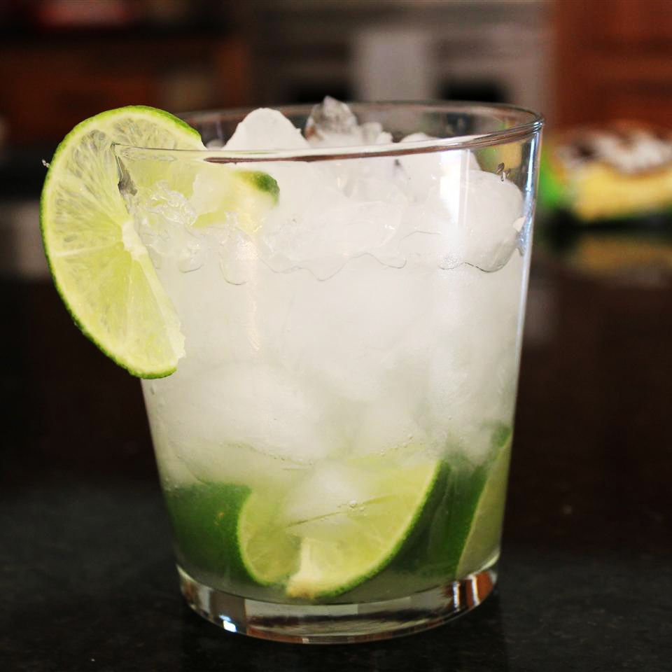

Capirinha

Description
Super basic and all you need for a perfect cocktail.
Ingredients
- ½ lime, quartered
- 1 teaspoon white sugar
- 2 ½ fluid ounces cachaça (Brazilian rum)
- 1 cup ice cubes
Steps
- Squeeze and drop lime wedges into a large rocks glass. Add sugar and muddle until juices release.
- Pour in cachaça and ice. Stir well.